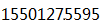

姓名：撖志恒
手机：
爱好：跑步，网球
学校：中国科学院大学
学历：硕士研究生 2011 - 2014
学校：河南大学
学历：本科 2007 - 2011
邮箱：ronald.han7(at)gmail.com
多源异构网络数据综合分析平台： 网络爬虫，数据清洗、同构，热点分析，空间聚类，Python/Djano/PostgreSQL/Echart
简介：从网络多个数据源（包括政务公开数据、点评类网站、微博等站点）获取半结构化数据，并将不同来源和结构的数据清洗、格式化，对包含的地理相关信息进行地址解析和空间坐标纠偏。利用多类数据进行统计分析、空间结构聚类，热点分析和行为模式分析。发现北京丰台地区的空间聚集核、热点区域和公众行为模式。
负责：系统总体设计，网络爬虫实现，数据预处理，文本地理信息的地址解析和空间坐标纠偏，空间数据挖掘和分析，分析结果可视化。
项目评价：得到北京市丰台区规划委领导高度评价，认为数据分析平台是规划实施评估项目的亮点。项目地址
Edx公开课项目BerkeleyX：利用Spark进行数据挖掘和机器学习，Spark/Python/Scala
简介：加州大学伯克利分校大数据分析培训项目，利用Spark完成一系列大数据分析任务。包括：Apark CLF网站日志分析，基于Google和Amazon商品描述数据的文本解析和实体解析，基于协同过滤开发电影推荐系统，线性回归模型， 基于Criteo数据，构建逻辑回归模型预测广告点击率和降维算法PCA实现。
负责： 所有任务的独立实现，对相关模型（回归模型、PCA算法、协同过滤等）的深入学习
项目评价：通过项目学习，熟练掌握使用Spark进行数据分析流程，掌握回归模型、推荐系统开发和数据降维处理。项目地址
空间大数据分析平台：基于Hadoop搭建空间大数据分析平台，Hadoop/HBase/Hive/Java
简介：生产环境中获取不同结构，多时间段的空间数据和属性数据，不同数据存放位置各异，联合多种数据进行分析较为困难。构建基于Hadoop的大数据分析平台，将多种数据统一存放于Hive中，为城市规划评估实施提供数据支撑。
负责：Hadoop集群搭建和维护，关系型数据向Hive的转存
项目评价：通过搭建Hadoop集群，了解大数据平台的构建过程及维护任务，熟悉数据转换和数据清洗的过程。项目地址
其他项目